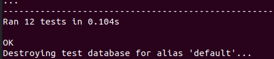

Тесты на PATCH запросы
Тест изменения сласти сотрудника
class EmployeeUpdateTest(TestCase):
@classmethod
def setUpTestData(cls):
Employee.objects.create(name='Харитонов Лука Ильич', phone_number='+79949788813',
passport='4952 931368')
def test_update_employee(self):
self.maxDiff = None
url = reverse('candy_app:employee-update', args=['1'])
data = {'id': 1, 'name': 'Харитонов Лука Ильич', 'phone_number': '+79949788813',
'passport'= 4952 931368}
response_retrieve = self.client.get(url, format='json')
self.assertEqual(response_retrieve.status_code, status.HTTP_200_OK)
self.assertEqual(response_retrieve.json(), data)
data['candy'] = 'Ferrero Rocher'
response_update = self.client.put(url, data, content_type='application/json')
self.assertEqual(response_update.status_code, status.HTTP_200_OK)
self.assertEqual(response_update.json(), data)
Тест на обновление данных паспорта сотрудника
class EmployeeUpdateTest(TestCase):
@classmethod
def setUpTestData(cls):
Employee.objects.create(username='artem', password='yay228',
passport='4633 754599',
name='Долгов Артём Егорович', phone_number='+79039856794')
def test_update_employee(self):
self.maxDiff = None
url = reverse('candy_app:employee-update', args=['1'])
data = {'id': 1,
'is_superuser': False, 'email': '', 'is_staff': True,
'is_active': True, 'passport': '4633 754599',
'name': 'Долгов Артём Егорович', 'user_permissions': []}
response_retrieve = self.client.get(url, format='json')
self.assertEqual(response_retrieve.status_code, status.HTTP_200_OK)
self.assertEqual(response_retrieve.json(), data)
data['passport'] = '6679 943251'
response_update = self.client.put(url, data, content_type='application/json')
self.assertEqual(response_update.status_code, status.HTTP_200_OK)
self.assertEqual(response_update.json(), data)
Тест на обновление стоимости сласти
class CandyUpdateTest(TestCase):
@classmethod
def setUpTestData(cls):
Candy.objects.create(name='Ferrero Rocher', sort='Конфеты', price='400')
def test_update_candy(self):
self.maxDiff = None
url = reverse('candy_app:candy-update', args=['1'])
data = {'name': 'Ferrero Rocher', 'sort': 'Конфеты', 'price': 400}
response_retrieve = self.client.get(url, format='json')
self.assertEqual(response_retrieve.status_code, status.HTTP_200_OK)
self.assertEqual(response_retrieve.json(), data)
data['price'] = 550
response_update = self.client.put(url, data, content_type='application/json')
self.assertEqual(response_update.status_code, status.HTTP_200_OK)
self.assertEqual(response_update.json(), data)
Результат
